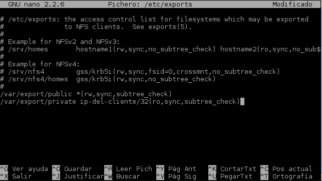

- Módulo: Sistemas Operativos
- Título del trabajo NFS
- Componentes del grupo: Eliot Farrais García
- Curso Académico: 2014/2015
- Fecha de entrega: 9 de marzo de 2015, 08:10
Instalamos el rol de servidor de archivos y elegimos NFS, en administración del servidos
Una vez instalado vamos a Inicio -> Herramientas Administrativas -> Servicios para network File System
Creamos dos directorios a compartir en C:\. Uno Private y otro Public
Hacemos clic derecho -> Propiedades -> Uso compartido de NFS y ponemos Public como lectura/escritura y Priate con solo lectura desde ls red

Desactivamos la interidad y autentificación de Kerberos
En permisos, habilitamos los permisos de Lectura y escritura, activando el acceso a la Raíz
En el cliente, montamos el servicio para NFS activando la característica de Windows
El la consola ponemos showmount -e ip-del-servidor para comprobar los servicios disponibles a compartir en el servidor
Ponemos nfsadmin client start

Ponemos el comando: mount –o anon,nolock,r,casesensitive \\ip-del-servidor\Nombre-recurso-NFS * para conectar public y private
Comprobamos que nos salen los recursos en Equipo
Intentamos copiar en Private un documento, y comprobamos que solo es , solo lectua
En public realizamos la misma operación y comprobamos que nos funciona correctamente
Cambiamos la Ip del servidor
Cambiamos el nombre del Servidor con el comando hostname
Modificamos el archivo /etc/hosts
Instalamos los programas con apt-get install nfs-common nfs-kernel-server
Creamos las carpetas Public y Private
Modificamos la pertenencia de grupos
Modificamos el permiso de private
Modificamos el archivo /etc/export, cambiando la IP del cliente
Inicamos el service con el commando:
Cambiamos la I.P. del cliente
Instalamos el paquete nfs-common con elcomando aptitude install nfs-common

Hacemos ping al servidor para comprobar que efectivamente tenemos conexión entre los servidores
Creamos la carpeta /mnt/remoto/public y lo montamos con el comando 172.16.08.105:/var/export/public /mnt/remoto/public
Hacemos lo mismo con la carpeta /mnt/remoto/private, montándola con el comando 172.16.108.105:/var/export/private /mnt/remoto/private
Comprobamos que los ficheros están montados con elcomando df -hT *
Comprobamos con la ventana de comando qe efectivament solo se puede crear en la carpeta public yy solo se puede leer en la carpeta private
No pude acceder a las carpetas compartidas desde el explorador pero sí desde la terminal., debido a que se salía un mensaje de acceso denegado
a la hora de intentar aceder a la carpeta private